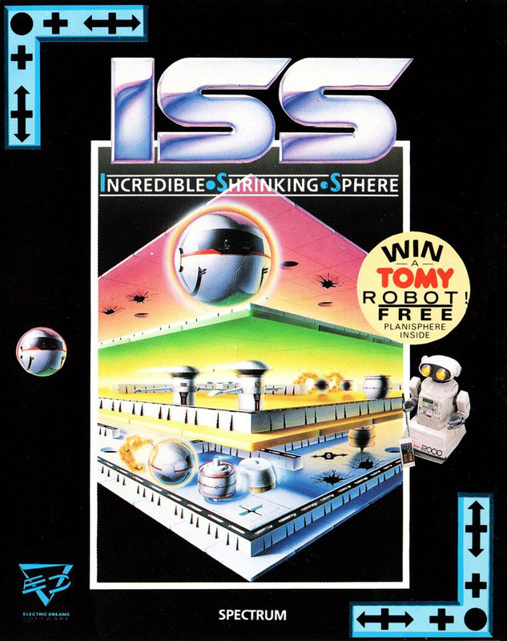
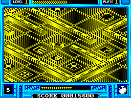

Incredible Shrinking Sphere


{kind=link}

| Publisher: | Electric Dreams |
| Price: | £9.99 cass |
| Year: | 1989 |
| Source: | CRASH, Issue 62 |

Ball goes on CRASH diet
You live on the planet Sangfalmadore and, being an ambitious sort of chap, have entered the Sphere Training Corps. The most fearsome part of the STC is the Sangfalmadore Run, made even more deadly by a recent earthquake trapping Colonel Matt Ridley. You’ve volunteered to rescue him, but only complete mastery of your fighter sphere will see you through.

The Run is made up of eight levels, each subdivided into four interconnected isometric mazes. There’s much more to the game though, than simply having a good enough sense of direction to find the exits and lifts. The sphere is incredible not only because it can shrink, but also because it can expand and change its weight by touching special tiles. Being small allows you to go through narrow passageways, being light means you don’t fall through cracked tiles, but at other times you need to be big and heavy to push objects around.
There are also hostile tiles which can trap you, domes which can send you zooming off at high speed, and assassin generators. Assassins are hostile drones which take a life on contact — unless you have a shield (gained by touching the relevant tile) or shoot them first. You only have a limited amount of ammunition, but you can get a refill by bumping into an ammo dump — four of these are placed by the player before the start of the game. The Run’s toughest problem however, is the rapid decay of all the blank tiles. Contact with a decayed tile is deadly, so there’s a time limit.
Clearly ISS is a fairly complex game, made even more so by the ball’s inertia leading to control problems. Persistence has its own reward though, and a game of immense playability is soon revealed. Both skill and strategy are needed to get through the levels and this combination gives the game long-lasting appeal — it really grows on you the more you play it.
PHIL ... 90%
ROLL OVER?
- Try to stay as small and light as possible (did I mention Nick?!).
- Collect a new shield whenever you see one. If your shield runs out, be very careful not to bump into assassins.
- When you place your ammunition dumps, make a sketch of the maze so you’ll know where you’re going.
- Roll over the plus signs for extra points — you get an extra life after 50000 points.
- Whatever you do, don’t be a square!
If you thought that the control on Virus was tough wait until you play Incredible Shrinking Sphere. Slow and deliberate movements are a must because thundering blindly about often causes the normally erratic ball to become wildly anarchic. Practice makes perfect though, and after that great fun can be had trying to complete the current level whilst keeping out of the reach of the assassins. Like Mike, I found the prompt return to Level One after a death absolutely infuriating, but that said, this a very challenging and innovative game which will keep you playing for ages.
MARK ... 90%
Gameplay is original, challenging and most importantly, enjoyable! The only major problem is the fact that after every life the sphere goes back to the top of the first plate, which is absolutely maddening when you were at the bottom of the fourth! The title tune isn’t exactly the sort of thing you put on tape and listen to on the Walkman (well, not unless you’ve got inexplicably bad musical taste!), but the ingame effects are quite adequate. Well designed, and more or less perfectly implemented, ISS is a pleasure to play. At ten quid it’s a fair investment, but well worth it!
MIKE ... 91%
THE ESSENTIALS
| Joysticks: | Kempston, Sinclair |
| Graphics: | Attractive scrolling, isometric mazes |
| Sound: | Only a few spot effects, even on the 128K |
| Options: | Place ammunition dumps |
| General rating: | A puzzling, enjoyable maze game with lots of lasting appeal |
| Presentation: | 86% |
| Graphics: | 85% |
| Sound: | 52% |
| Getting started: | 89% |
| Addictive qualities: | 91% |
| Overall: | 90% |